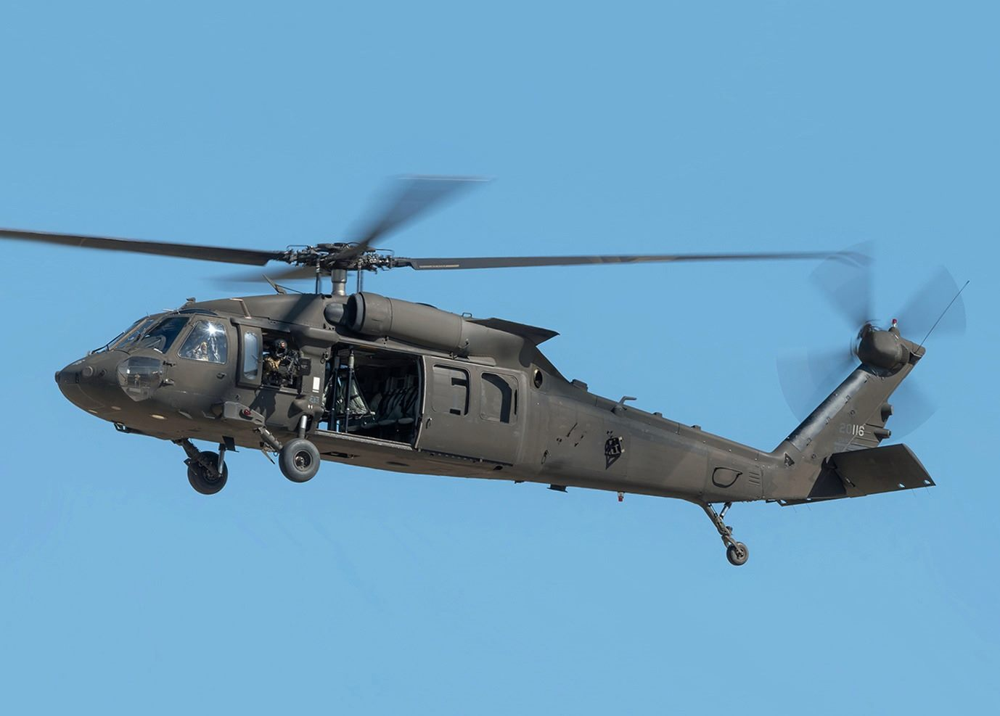

美, 오스트리아에 UH-60M 블랙호크 12대 판매… 「특수장비」 단가 논란
미국이 오스트리아에 블랙호크 헬기 12대를 판매한다. 특수 장비를 더해 대당 비용이 대만 도입가를 크게 웃돈다고 자유시보가 전했다.
임숙분 기자 · 2026.06.18
橋국제·안보

자유시보는 미국이 오스트리아에 UH-60M 블랙호크 헬기 12대를 판매하기로 했으며, 여기에 추가된 특수 장비로 인해 대당 비용이 대만이 도입한 같은 기종보다 훨씬 높다고 보도했다. 같은 무기체계라도 옵션 구성과 패키지에 따라 가격이 크게 달라진다는 점을 보여주는 사례다.
광고 문의 · 300×250블랙호크는 다목적 수송헬기로 다수 국가가 운용 중이다. 구매국의 임무 요구와 통신·자위 장비, 정비·훈련 패키지가 더해지면 총사업비는 기체 단가의 배수로 늘어난다.
대만은 앞서 같은 기종을 도입한 바 있어, 이번 오스트리아 사례는 무기 도입의 '진짜 비용'을 비교 평가하는 참고점이 된다. 방산 거래의 가격은 단순 기체 수가 아니라 패키지 전체로 따져야 한다는 지적이 나온다.
華橋時報는 특정국 안보 판단에 개입하지 않고, 공개된 거래 정보를 사실대로 전한다. 무기 도입 비용 구조는 역내 안보 지형을 이해하는 데 참고가 된다.
출처·참고 (사실 확인용 — 본문은 직접 재작성)
· 자유시보
· 자유시보